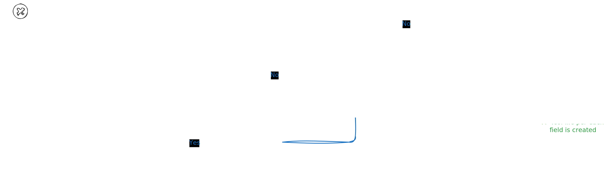

Storage Engine
Overview
The storage engine turns incoming events into durable, immutable data you can query quickly. It’s built around append-only writes, in-memory buffering, and on-disk segments that are efficient to scan and easy to skip.
Core Components
- WAL (write-ahead log): Per-shard durability log. Every accepted event is appended here first.
- MemTable: In-memory buffer for recent events. Fast inserts; swapped out when full.
- Flush worker: Converts a full MemTable into an immutable on-disk segment in the background.
- Segments: On-disk building blocks (columns, zone metadata, filters, lightweight indexes).
- Compactor (covered later): Merges small segments into larger ones to keep reads predictable.
Write Path (At a Glance)
- Validate payload against the event type schema.
- Append to the WAL (durability point).
- Apply to the MemTable (fast in-memory structure).
- When the MemTable hits a threshold, swap it out and enqueue a background flush.
- Flush worker writes a new segment and publishes it atomically.
See the diagram below:

Write Path (In Depth)
0) Validate the event
- What: Check the incoming payload against the registered schema for its
event_type. - Why: Ensures only well-formed data enters the system so downstream files and indexes remain consistent.
Example:
{
"timestamp": 1700000000,
"event_type": "signup",
"context_id": "user-42",
"payload": { "plan": "pro", "country": "US" }
}
Equivalent command:
STORE signup FOR user-42 PAYLOAD {"plan":"pro","country":"US"}
Validation ensures required fields exist and types are correct (for example, the event_type is known and a "plan" is provided in the payload).
1) Append to the WAL (durability point)
- What: Append the validated event to the per-shard Write-Ahead Log (WAL).
- Why: Once the append returns, the event will survive a crash. On restart, the system replays WAL entries to rebuild in-memory state and complete any interrupted flushes.
- Notes:
- WAL records are lightweight, line-oriented appends (JSON-serialized per line).
- WAL files rotate in sync with the MemTable flush threshold (
engine.flush_threshold), so replay windows are bounded by flush points. After a successful flush, older WAL files up to that cutoff can be pruned. - Behavior is tunable via config:
[wal] enabled, dir, buffered, buffer_size, flush_each_write, fsync, fsync_every_nand[engine] flush_threshold.
Crash safety example:
- If the process crashes after the WAL append but before the event hits memory, recovery will re-insert it into the MemTable on startup.
2) Insert into the MemTable (fast in-memory apply)
- What: Place the event into the in-memory, append-friendly, queryable buffer (MemTable).
- Why: Absorb writes in memory to batch them into large, sequential segment writes (avoids random I/O), maintain backpressure with bounded memory, and maximize ingest throughput. As a secondary benefit, new events are immediately visible to queries.
- Behavior:
- The MemTable is sized by
flush_threshold(config). When it reaches capacity, it triggers a swap and a background flush. - Inserts are grouped by context so the flusher can scan them quickly.
- The MemTable is sized by
Small example:
flush_threshold = 4- Incoming events (in order): A, B, C, D, E
- A, B, C, D go into the active MemTable. After D, the MemTable is full.
- A background flush is enqueued for these four; a fresh MemTable becomes active.
- E enters the new MemTable immediately (no blocking on the background flush).
3) Swap and enqueue a background flush
- What: When the active MemTable is full, it’s atomically swapped for a fresh, empty one, and the full snapshot is queued for flushing.
- Why: Writers remain responsive (no long I/O in the foreground) and the system maintains bounded memory.
- Details:
- The passive MemTable (now immutable) is handed off to the flush worker.
- Writes proceed into the newly created active MemTable.
4) Flush worker writes a new immutable segment
- What: The background worker turns the passive MemTable into an on-disk segment directory (for example,
segment-00042/). - Inside the segment:
- Column files: One file per field, optimized for sequential appends and later memory-mapped (mmap) access. Naming:
<uid>_<field>.col. Example:u01_timestamp.col,u01_event_type.col,u01_context_id.col,u01_plan.col,u01_country.col. Where<uid>is defiened per event type. - Zone metadata: Per-zone min/max timestamps, row ranges, and presence stats for pruning.
- Filters: Compact structures (for example, XOR filters) for “definitely-not-here” checks before touching columns.
- Offsets/Index: Jump tables and per-field offsets (
.zffiles) to locate values efficiently.
- Column files: One file per field, optimized for sequential appends and later memory-mapped (mmap) access. Naming:
- Publication: Segment creation is atomic at the directory level; once complete, readers can discover and scan it.
See the diagram below:

Sizing example:
flush_threshold = 32_768events_per_zone = 2_048- A full flush of 32,768 events creates exactly 16 zones. Each zone has its own metadata and contributes field values to the filter files. Larger
events_per_zonevalues reduce metadata overhead but offer coarser pruning; smaller values increase pruning precision at the cost of more metadata.
5) Cleanup and WAL compaction
- What: After a successful flush, the system can prune or rotate old WAL files up to a cutoff corresponding to flushed data.
- Why: Keeps recovery time short and disk usage bounded.
End-to-end write example
- Client sends
STORE signup ...with a valid payload. - The engine validates the event against the
signupschema. - The event is appended to the WAL for shard 3 (durability).
- The event is inserted into shard 3’s active MemTable.
- When the MemTable reaches
flush_threshold, it is swapped and the old one is queued for the background flush. - The flush worker writes
segment-00137/with column files, 16 zones (if 32,768/2,048), zone metadata, XOR filters, and offsets/index. - Once published, queries immediately see the segment alongside any newer in-memory events.
- The WAL up to (and including) the flushed range is now safe to compact or rotate.
Failure model (write path)
- Crash before WAL append: The event is lost (not acknowledged).
- Crash after WAL append but before MemTable insert: The event is recovered from the WAL and re-applied on startup.
- Crash after MemTable insert but before flush: The event is not yet in a segment, but it is durable in the WAL. On restart, WAL replay restores it to the MemTable; if a swap occurred and a passive MemTable existed, its contents are reconstructed from WAL as well. No data loss; no duplicate segments.
- Crash during flush: The WAL still contains the flushed events; on restart, the system replays or completes the flush. Partially written segments are ignored until a valid, fully published segment is present.
Tuning the write path
- shards: More shards increase parallelism of WAL, MemTable, and flush pipelines (at the cost of more intense CPU and RAM usage and more files and directories).
flush_threshold: Controls MemTable size. Higher values reduce flush frequency (bigger segments) but increase peak memory and WAL replay cost.events_per_zone: Smaller values improve pruning for reads but increase metadata and filter counts. Pick based on query selectivity and typical field cardinalities.
Durability & Recovery
- Covered in the write path: WAL append is the durability point; replay restores MemTables; WAL rotation keeps recovery bounded. See Failure model above.
Backpressure & Safety
- Bounded channels between components provide backpressure under load (writers slow down instead of exhausting memory).
- Async workers (flush and compaction) are throttled so foreground writes and reads stay responsive.
This is the spine of the engine: durable append, fast memory, immutable segments with rich metadata, and just enough background work to keep reads snappy as data grows.